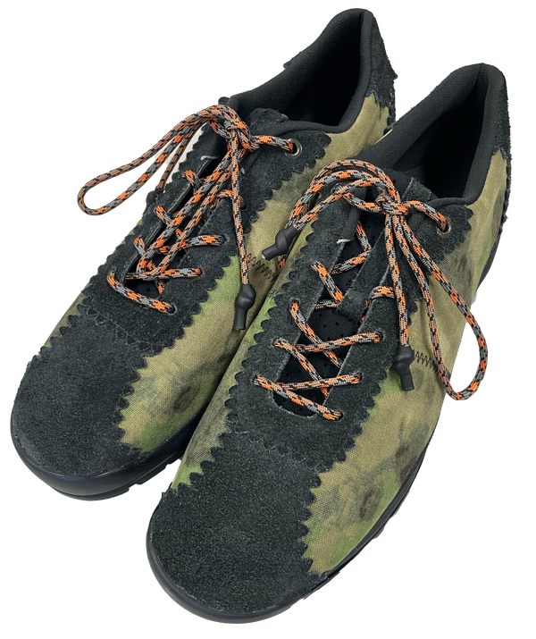
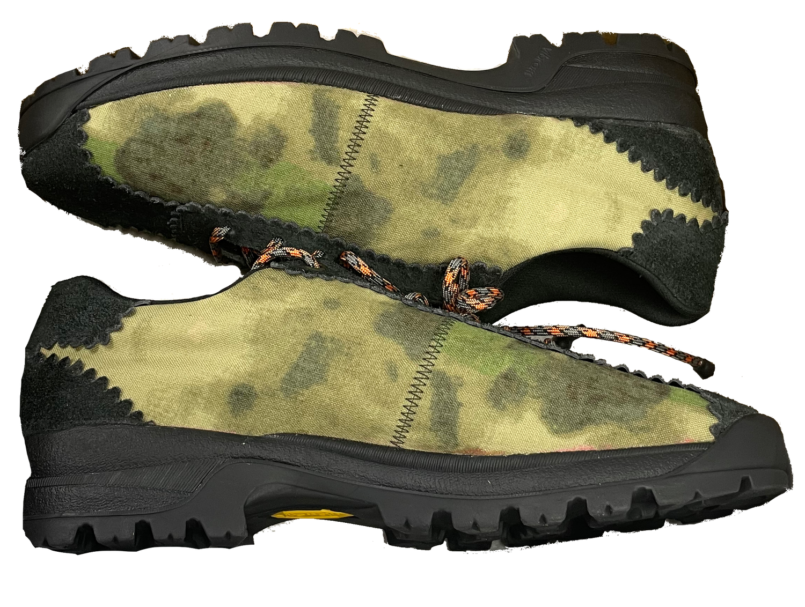
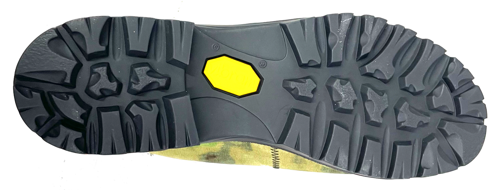
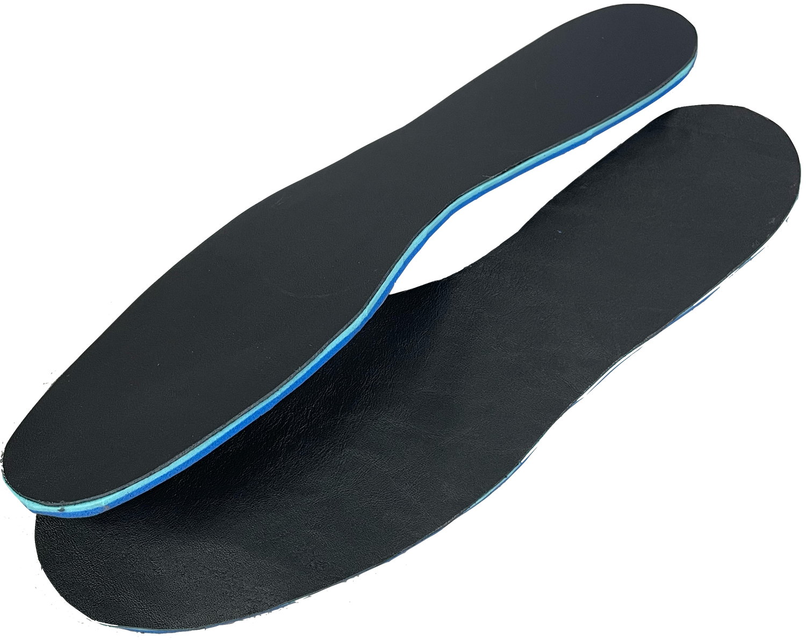
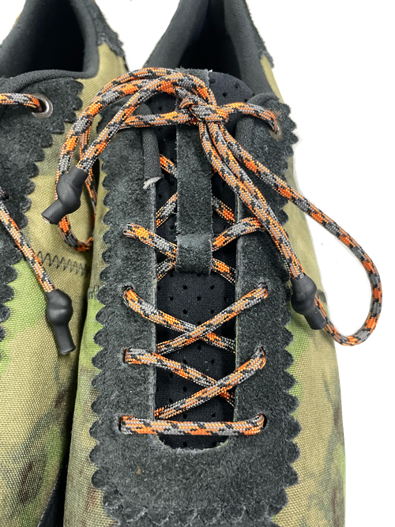
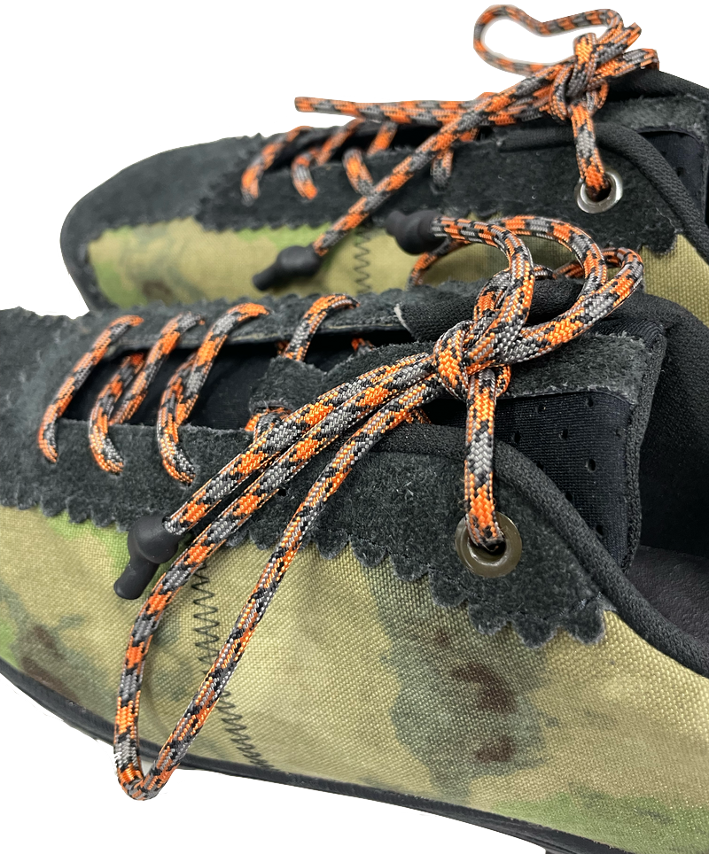

Hiker1
Custom-made footwear development






Hiker1
Custom-made footwear
- Upper
- Cordura 500D, Roughout Suede
- Lining
- Pigskin, Polyester foam mesh
- Tongue
- Neoprene, polyester foam mesh
- Lacing
- Custom Paracord with rubber tip
- Insole
- Poron Dual Density with leather lining
- Patternmaking
- Cut and Sew
- Prototyping
- Sketching
- Hand Lasting
- Illustrator
- Photoshop
A localized take on technical outdoor footwear, designed around a Vibram Baltra outsole using strictly locally available materials. Featuring hand-treated water-resistant leather and Cordura 500D uppers, this pair was pattern-drafted, cut, stitched, and lasted entirely by hand to prove functional sportstyle production within local sourcing constraints. Vibram soles are mostly sold here for repairs, so I also wanted the finished shoe to look as good as possible, with the aim of working with Vibram properly in future.